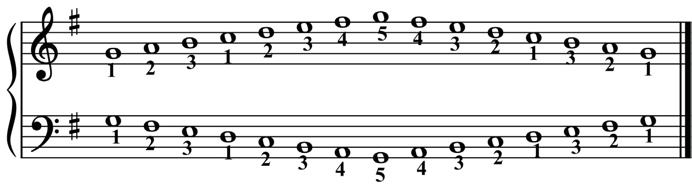
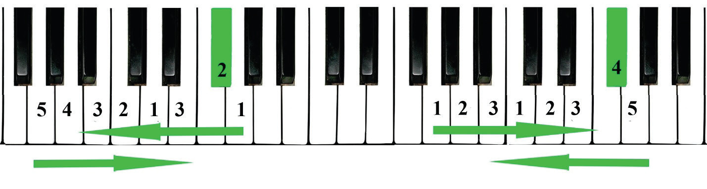
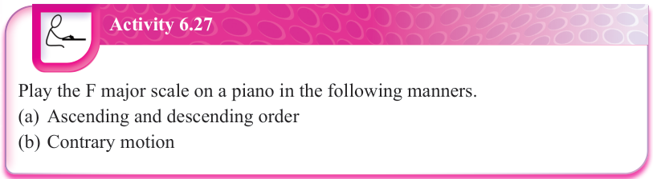

Note that finger number 1 for the right hand starts on the note G in the treble clef while finger number 1 for the left hand starts on the note G in the bass clef.


R.H

L.H

Middle C

Activity 6.27
Play the F major scale on a piano in the following manners.
(a)
Ascending and descending order
(b)
Contrary motion
How to play the A minor scale on the piano
The ‘A’ minor scale is relative to the C major scale. Thus, both the ‘A’ minor and C major scales share a key signature. Therefore, like the C major scale, ‘A’ natural minor scale involves only white keys on a piano but starts on note A. When playing ‘A’ natural minor scale, the fingering is the same as in C major scale. However, when playing ‘A’ harmonic minor scale, note G becomes G♯.